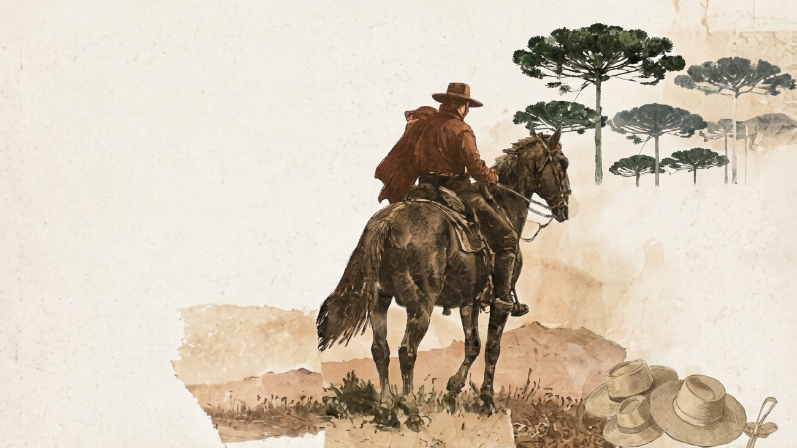

Identidade
Como se construiu a ideia de gaúcho?
A identidade gaúcha não surgiu do nada. Ela foi construída ao longo do tempo, a partir de símbolos, interesses e disputas.
Conheça os festivais
A identidade gaúcha não surgiu do nada. Ela foi construída ao longo do tempo, a partir de símbolos, interesses e disputas.
Conheça os festivais